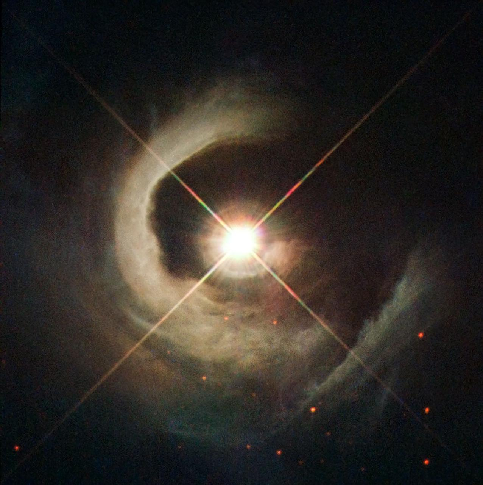
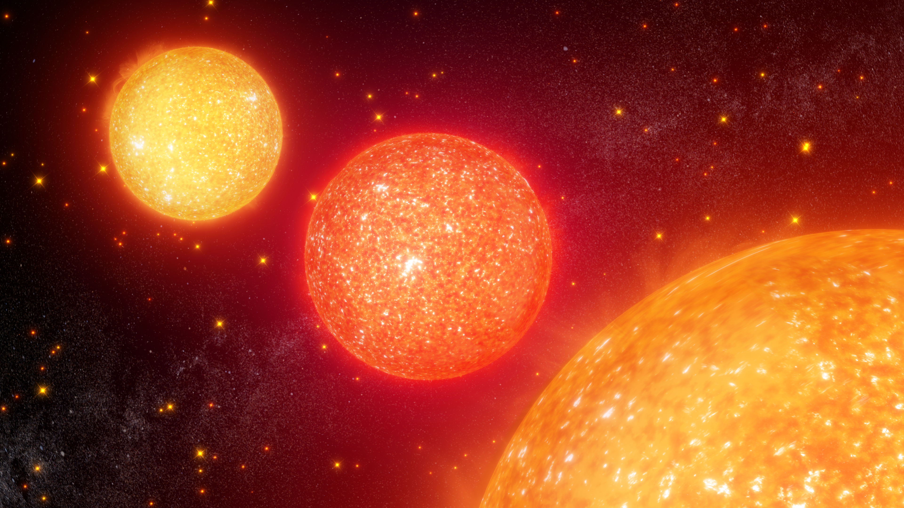
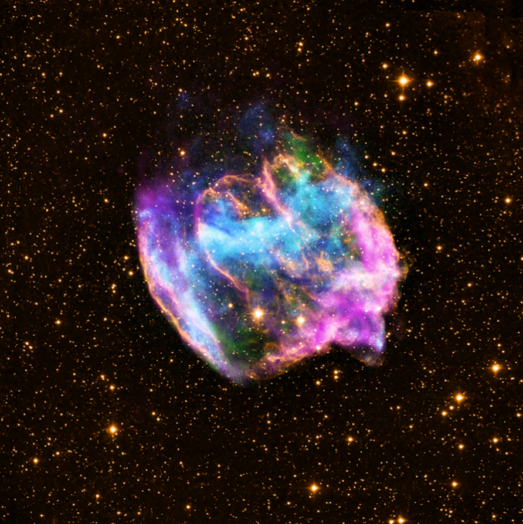
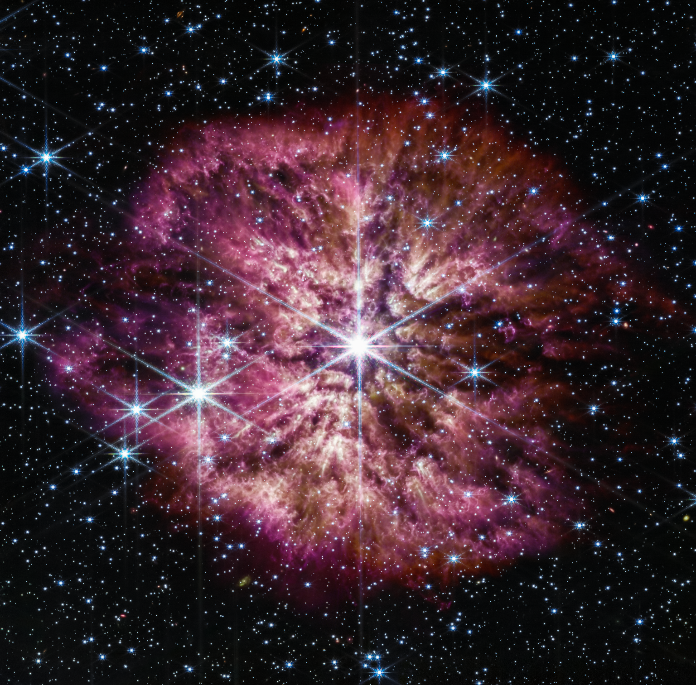

The stellar population is mostly composed of Main Sequence Stars. After their birth in the molecular clouds, stars spend 90% of their lives in this phase, fusing hydrogen into helium within their cores. Main sequence stars vary from sizes, colors, and luminosity. Main Sequence stars can be a tenth of the Sun's size or two-hundred times the Sun's size. While one main sequence star may live millions of years, another can live into the billions. These stars can be seen by the unaided eye with some of the most popular examples being Sirius (the brightest star in the night sky) and the Sun.
Important things to note for the log entries:
IMAGE CREDIT: NASA/GFSC

Evolved GiantsEvolved Giant stars have a much larger radius and brighter luminosity that normal main sequence stars. Stars go from main sequence to evolved giants after using all of the hydrogen fuel in their cores. As such, the remaining energy pulls from what was produced during fusion. As the core of these stars is squished, the temperate and pressure increases as well causing the helium to fuse into carbon. Hydrogen then moves into the star's outer layers, causing them to expand into bigger and brighter stars. These stars slowly shed their outer layers over time.
Important things to note for the log entries:
IMAGE CREDIT: NASA/GFSC

Stellar Remnants appear once an Evolved Giant star sheds it's outer layers and leaves a core. These stars produce no heat and cool over time, however, they're very dense. For example, a teaspoon of material from a White Dwarf would weight more than a pickup truck. These stars vary from their starting mass and have their own unique processes during the stellar remnant life stage.
Important things to note for the log entries:
IMAGE CREDIT: NASA/CXC/MIT/L.Lopez et al;

Rare & ExtremesRare & Extremes covers the unique stars within the galaxy that can be unusually hot, magnetic, unstable, or extremely small. This group is typically classified as needing more research, as their existence expands on the idea of understanding how stars work.
Important things to note for the log entries:
IMAGE CREDIT: NASA/ESA/CSA/STScI/Webb ERO Production Team